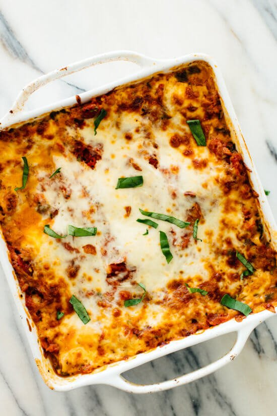

Lasagna

Description
This is one of the internet's most highly rated, delicious vegetable lasagna!
This recipe has been concocted specifically for the modern herbivore.
This particular dish will yield 8 servings of tender lasagna.
Ingredients
Veggies & Spinach
- 2 tbsp extra-virgin olive oil
- 3 large carrots, chopped
- 1 red bell pepper, chopped
- 1 medium zucchini, chopped
- 1 medium yellow onion, chopped
- 1/4 teaspoon salt
- 5-6 ounces baby spinach
Tomato Sauce
- 1 large can (28 ounces) diced tomatoes
- 1/4 cup roughly chopped fresh basil
- 2 tablespoons extra-virgin olive oil
- 2 cloves garlic, pressed or minced
- 1/2 teaspoon salt
- 1/4 teaspoon red pepper flakes
Remaining Ingredients
- 2 cups (16 ounces) low-fat cottage cheese, divided
- 1/4 teaspoon salt, to taste
- Freshly ground black pepper, to taste
- 9 no-boil lasagna noodles
- 8 ounces (2 cups) freshly grated, low-moisture, part-skim mozzarella cheese